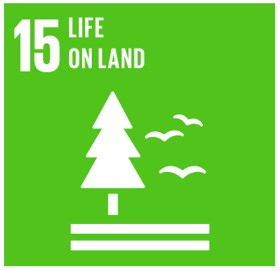

Goal 15: Sustainably manage forests, combat desertification, halt and reverse land degradation, halt biodiversity loss
Forests cover 30 per cent of the Earth’s surface and in addition to providing food security and shelter,
forests are key to combating climate change, protecting biodiversity and the homes of the indigenous population.
Thirteen million hectares of forests are being lost every year while the persistent degradation of drylands has led
to the desertification of 3.6 billion hectares.
Deforestation and desertification – caused by human activities and climate change – pose major challenges to sustainable
development and have affected the lives and livelihoods of millions of people in the fight against poverty. Efforts are
being made to manage forests and combat desertification.

Goal Targets
1) By 2020, ensure the conservation, restoration and sustainable use of terrestrial and inland freshwater ecosystems
and their services, in particular forests, wetlands, mountains and drylands, in line with obligations under
international agreements.
2) By 2020, promote the implementation of sustainable management of all types of forests, halt deforestation, restore
degraded forests and substantially increase afforestation and reforestation globally.
3) By 2030, combat desertification, restore degraded land and soil, including land affected by desertification, drought
and floods, and strive to achieve a land degradation-neutral world.
4) By 2030, ensure the conservation of mountain ecosystems, including their biodiversity, in order to enhance their capacity
to provide benefits that are essential for sustainable development.
5) Take urgent and significant action to reduce the degradation of natural habitats, halt the loss of biodiversity and, by
2020, protect and prevent the extinction of threatened species.
6) Promote fair and equitable sharing of the benefits arising from the utilization of genetic resources and promote appropriate
access to such resources, as internationally agreed.
7) Take urgent action to end poaching and trafficking of protected species of flora and fauna and address both demand and supply
of illegal wildlife products.
8) By 2020, introduce measures to prevent the introduction and significantly reduce the impact of invasive alien species on land
and water ecosystems and control or eradicate the priority species.
9) By 2020, integrate ecosystem and biodiversity values into national and local planning, development processes, poverty reduction
strategies and accounts.
10) Mobilize and significantly increase financial resources from all sources to conserve and sustainably use biodiversity and ecosystems.